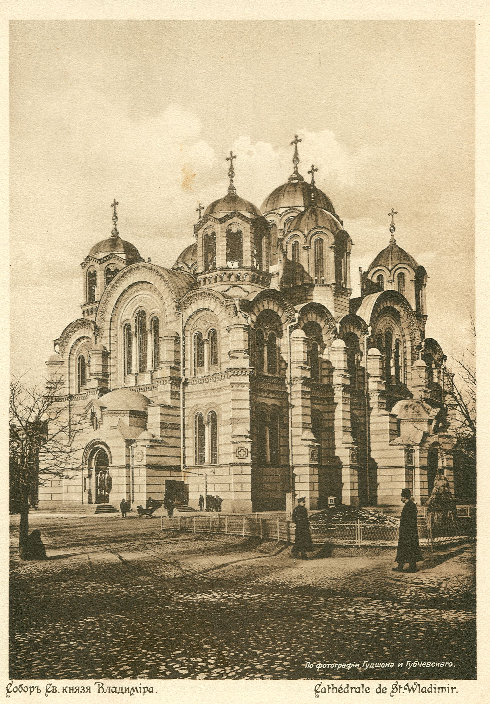
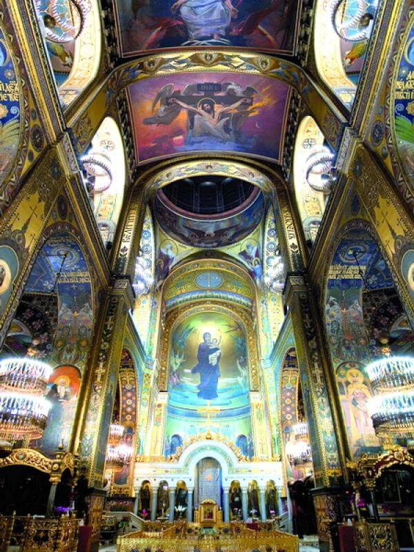

Володимирський собор

Історія
 У 1852 році Філарет, митрополит Московський, запропонував збудувати у Києві храм на честь майбутнього дев'ятисотріччя Хрещення Русі київським князем Володимиром. Громадяни з усіх частин Російської імперії почали масово жертвувати кошти на храм, і в 1859 загальна сума пожертв досягла 100 000 російських карбованців. Спорудження храму розпочалося в 1862, а закінчилося в 1882. На урочистому освячуванні собору, що відбулося 20 серпня 1896, був присутнім імператор Микола II з дружиною Олександрою Федорівною. У радянські часи собор залишався відкритим храмом, виконуючи функції кафедрального собору Києво-Галицької митрополії Російської Православної Церкви. Хоча спроби закрити були. Так, в серпні 1929 секретаріат ВУЦВК затвердив рішення Київської міської ради про закриття «за численними проханнями трудящих» Володимирського собору в Києві та організацію в його приміщенні Всеукраїнського антирелігійного музею. Під час окупації собор був відреставрований, на кінець 1943 було призначено його урочисте відкриття. Після визволення Києва від німців собор став кафедральним собором Російської православної церкви і у такій якості функціонував надалі. У 1992 р., після утворення Української Православної церкви Київського Патріархату храм став Патріаршим кафедральним собором цієї конфесії. У Володимирському соборі нині знаходяться мощі Великомучениці Варвари, реліквіяр для яких у 18 столітті виготовив київський золотар Самійло Ростовський, а також мощі Святителя Макарія.
Архітектура
Будівництво
У 1859 році Іван Штром представив креслення собору на розгляд будівельного комітету. Собор був спроєктований в неовізантійському стилі, в його основу було покладено хрест. Собор повинні були увінчати тринадцять золотих куполів. Будівельний комітет, розглянувши і схваливши проєкт, відправив креслення до Петербурга, де його затвердив особисто Олександр II. У березні 1860 був спланований майданчик для будівництва соборного храму. Враховуючи дефіцит коштів, будівельний комітет доручив єпархіальному архітекторові Павлу Спарро переробити проєкт Івана Штрома з метою зменшення розмірів споруди і кошторису на його будівництво. Спарро, щоб повністю не переробляти проєкт, вирішив зняти бічні нави, тобто змінити хрестоподібну основу. Замість тринадцяти куполів він залишив сім. Безпосередній нагляд за будівництвом будівельний комітет доручив Олександру Беретті, який вніс значні зміни до проєкту Штрома-Спарро. 15 (27) липня 1862, у день святкування пам'яті князя Володимира, у присутності місцевої аристократії та духовенства митрополит Київський і Галицький Арсеній заклав перший камінь майбутнього храму. Уже в 1866 році собор був збудований до куполів. Проте несподівано стіни, а слідом за ними арки й перекриття, дали глибокі тріщини. Стало зрозуміло, що вони не витримають ваги куполів. Роботи припинили, було створено спеціальний технічний комітет з провідних київських архітекторів, із Петербурга викликали Івана Штрома. З'ясувалося, що ситуацію викликали допущені при переробленні проєкту помилки в математичних розрахунках. У 1875 році до Києва знову приїхав імператор Олександр II. Здійснюючи інспекційний огляд міста, він поцікавився й будівництвом соборного храму. Побачивши порожній будівельний майданчик і повністю прогнилі риштування, він наказав за всяку ціну продовжити будівництво. З Петербурга негайно викликали одного з найвідоміших архітекторів Рудольфа Бернгарда, який зробив точні математичні розрахунки навантажень на стіни і перекриття, а потім знайшов і технічне рішення для ліквідації тріщин. Зовнішні тримальні стіни було запропоновано зміцнити прибудовою бічних нефів і контрфорсів.  У червні 1876 було відновлено будівельні роботи, які очолив київський архітектор Володимир Ніколаєв. Він розробив проєкти бічних нефів. Усередині храм було розділено на три нефи: середній і два бокові, а ті у свою чергу розділено хорами на дві нерівні частини. Округлість будові надавали апсиди, що відповідали ширині внутрішніх нефів. У соборі планувалося зробити п'ять притворів (три внизу і два на хорах). Однак за візантійськими традиціями було вирішено, що у Володимирському соборі буде один престол у середньому нефі, у правому ж розміститься жертовник, а в лівому — ризниця. Ще два вівтарі — Ольгинській і Борисоглібський — повинні були розташовуватися на хорах. У 1882 році двадцятирічне будівництво Свято-Володимирського собору завершилося.
Інтер'єр
Значну художню цінність мають внутрішні настінні розписи, які виконали 1885—1896 російські художники В. М. Васнецов, М. В. Нестеров, Павло та Олександр Свєдомські, українські — В. О. Котарбінський, М. К. Пимоненко, М. О. Врубель, В. Д. Замирайло, С. П. Костенко під загальним керівництвом професора А. В. Прахова. В. Васнецову належить розпис головної нави собору, в якій, крім релігійних сюжетів, велике місце займали історичні композиції — «Хрещення Русі», «Хрещення Володимира», портрети канонізованих святих: Володимира, Андрія Боголюбського, Олександра Невського, княгині Ольги та ін. М. Нестеров виконав іконостаси в бокових навах, 2 композиції — «Різдво» і «Воскресіння» — на стінах хорів і «Богоявлення» в хрещальні. Павлу Сведомському належать композиції «Таємна вечеря», «В'їзд до Єрусалима», «Суд Пілата», В. Котарбинському — «Вознесіння» та ін. Орнамент, що вкриває вільний простір, виконали українські майстри, крім правої нави, яку розписав М. Врубель.